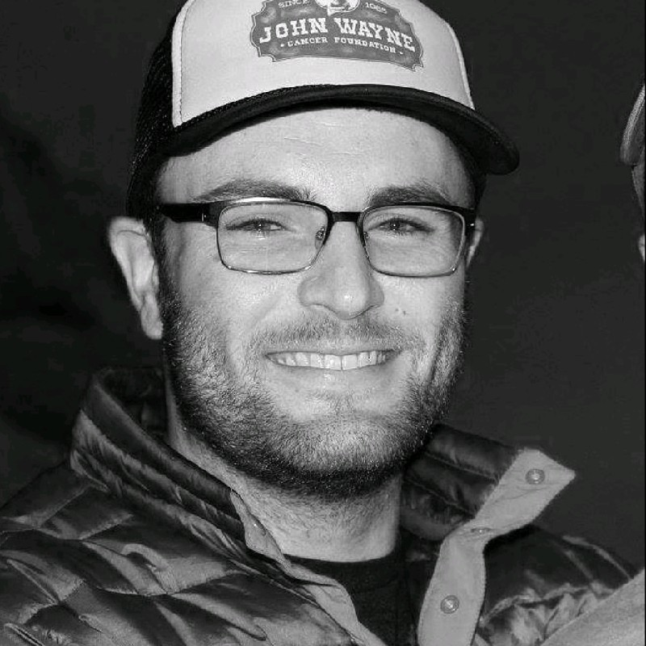

A Laguna Beach Resident, Southern California native, Computer Scientist, Mathmatician and Thinker.
DT is instested in form and function, the shapes and distortions that computers force on us today.
The art is defined as metamodern, quazi-pop, post-structual, shapeism.